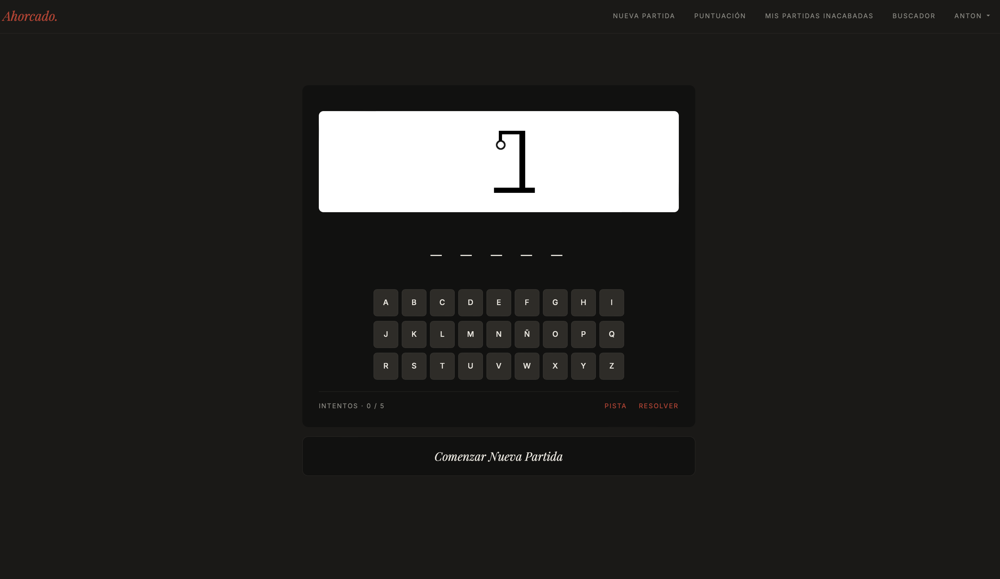

- Caso de estudio
- PHP
- JavaScript
- WebRTC
ISIK
Plataforma modular para quioscos de ticketing: pagos con tarjeta, recepción por videollamada e impresión de tickets. Ver la web de ISIK
Proyectos reales y conceptuales, contados con su proceso: el problema, las decisiones y lo que aprendí.
Plataforma modular para quioscos de ticketing: pagos con tarjeta, recepción por videollamada e impresión de tickets. Ver la web de ISIK

El juego de siempre, construido con PHP orientado a objetos, PDO y AJAX. Ver el proyecto
Durante mis prácticas desarrollé 3 webs para clientes reales. Están creadas con WordPress, Elementor y CSS

Web para empresa del sector TI, especializada en desarrollo de software específico para quioscos de ticketing. Web anpeam

Empresa boutique financiera especialista en operaciones de inversión. Web Linkcorporate
Web para empresa especializada en personalización de software desarrollado para totems tipo quiosco. Web isik